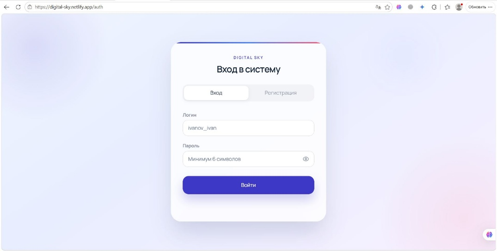
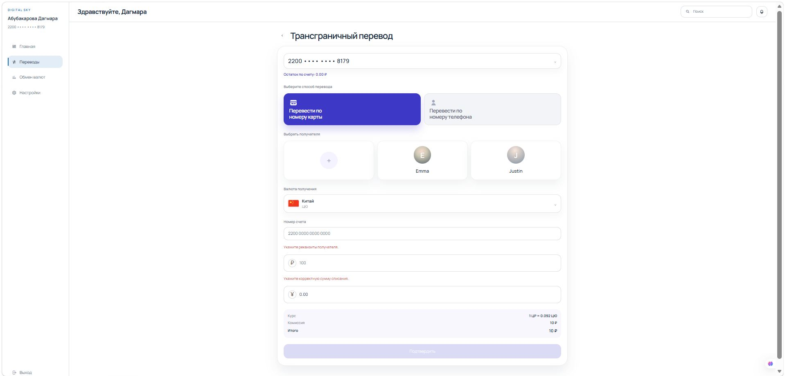
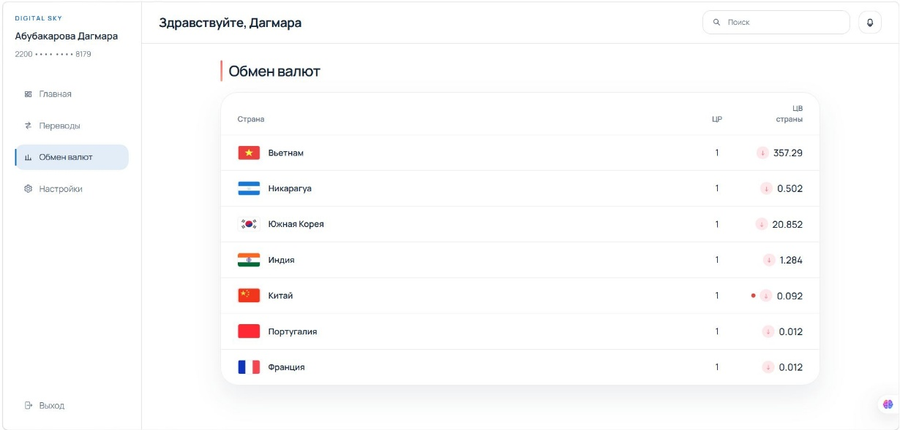
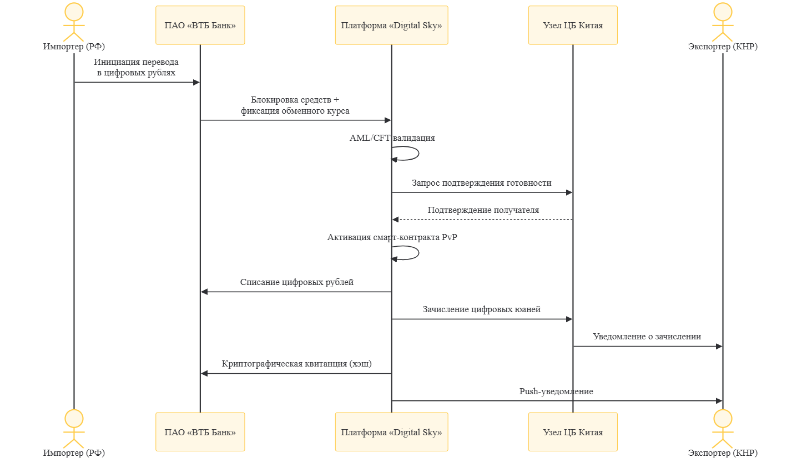

01 / Выпускная квалификационная работа
Дипломный проект
Архитектура, интерфейсы, алгоритм PvP, CAPEX, OPEX и бизнес-модель
Исследовательский центр проекта: от анализа международных расчётов и моделей ЦВЦБ до архитектуры платформы, проектных финансовых показателей и прототипа интерфейса.
Выводы ниже опираются на представленные авторами материалы. Для каждого набора данных указаны документ и конкретный раздел или таблица. Источники не заменены неподтверждёнными публикациями.
Архитектура, интерфейсы, алгоритм PvP, CAPEX, OPEX и бизнес-модель
Три модели совместимости, трёхуровневая архитектура Digital Sky, транзакция Россия–Китай
Проблемы рынка, модели взаимодействия ЦВЦБ, экономические и политические риски
Уровни защиты, архитектура защищённого обмена, расчётные показатели до и после
Клиентский путь, участники, аудитории и ограничения
В статье отмечены комиссии, продолжительность, участие нескольких посредников и сложности трансграничного согласования. Приведённые оценки относятся к анализу авторов, а не к независимым замерам Digital Sky.
Диапазон, приведённый в научной статье
указанная в статье оценка комиссии трансграничного платежа
По анализу авторов статьи
рабочих дней — указанный диапазон обработки
Схематическое, качественное сравнение
Различные участники обмениваются сообщениями и исполняют собственные расчётные обязательства по правилам соответствующих систем.
Концепция предусматривает координацию готовности сторон и связанность двух валютных частей по принципу PvP.
В научных материалах различаются совместимые, взаимосвязанные и единые мультивалютные системы. Digital Sky спроектирован именно в логике взаимосвязанных систем.
Страны согласуют стандарты, идентификацию и регуляторные требования при сохранении отдельных платформ.
Независимые платформы соединяются шлюзами и протоколами взаимодействия.
Несколько валют используют общий реестр или интегрированную расчётную инфраструктуру.
Научная статья и диплом описывают консорциумный подход, в котором национальные центробанки и коммерческие банки участвуют в разных частях финансового сценария.
Центральные банки стран-участниц и коммерческие банки-операторы. Национальные платформы ЦВЦБ сохраняют собственный контроль.
Межсистемная коммуникация, расчёт по принципу PvP, атомарные свопы и предусмотренная логика смарт-контрактов.
Стандартизированные API, взаимодействие с банковскими системами, AML/KYC-проверками и клиентскими интерфейсами.
Концептуальная схема, а не работающая банковская сеть
В расширенной статье расчёт представлен как последовательность: блокировка цифровых рублей, проверки, готовность участников, атомарный PvP-обмен и запись результата.
Это реальные изображения, встроенные в предоставленный диплом: регистрация, рабочая панель, экран перевода, валютный раздел и последовательность действий. Они подтверждают проработку интерфейса, но не доказывают готовность банковской инфраструктуры.





Показаны планируемые капитальные затраты, операционные расходы и трёхлетний прогноз. Это сценарий финансового планирования, а не отчёт о фактических доходах и подключениях.
Первоначальные инвестиции, млн ₽
Операционные расходы в год, млн ₽
По статьям расходов, млн ₽
Первый год, млн ₽
| Статья затрат | Затраты, млн ₽ | Доля |
|---|---|---|
| Архитектура и смарт-контракты | 12,5 | 25,8% |
| Протокольный и сервисный уровень | 18 | 37,1% |
| Клиентские интерфейсы | 8,5 | 17,5% |
| Лицензии и базовое ПО | 5 | 10,3% |
| Аудит и сертификация | 4,5 | 9,3% |
| Итого | 48,5 | 100% |
| Статья затрат | Затраты, млн ₽ | Доля |
|---|---|---|
| Облачная инфраструктура | 3,6 | 14,5% |
| Персонал и поддержка | 14,4 | 58,2% |
| B2B-маркетинг и интеграция | 4,5 | 18,2% |
| Юридическое сопровождение | 1,8 | 7,3% |
| Резерв | 0,45 | 1,8% |
| Итого | 24,75 | 100% |
Выберите показатель и сравните три года
Сопоставление ключевых строк прогноза по годам
| Показатель | Год 1 | Год 2 | Год 3 |
|---|---|---|---|
| Банков-партнёров | 10 | 15 | 25 |
| Транзакций, млн | 1,5 | 4,5 | 12 |
| Интеграция, млн ₽ | 15 | 22,5 | 37,5 |
| Комиссии, млн ₽ | 30 | 90 | 240 |
| Валовой доход, млн ₽ | 45 | 112,5 | 277,5 |
| OPEX, млн ₽ | 24,75 | 32 | 45 |
| Операционный поток, млн ₽ | 20,25 | 80,5 | 232,5 |
Заявленная в дипломе оценка окупаемости капитальных затрат. Основана на предположениях финансовой модели.
Расчётная экономия относительно выбранного традиционного тарифа. Не является доказанной экономией полных затрат на реальную операцию.
Курсовая по защищённому межгосударственному обмену данными содержит сравнение целевых параметров «до / после». Эти значения не представлены как результаты испытаний готового Digital Sky.
Диапазоны из табл. 3.6; числа для ширины столбцов — середины диапазонов
Проектные документы предлагают криптографические средства и многоуровневую защиту передачи финансовой информации.
Установление доверия к участникам и защита целостности сообщений.
Защищённая передача межсистемных сообщений.
Регистрация результата для последующего контроля и аудита.
Предлагаемая встроенная проверка участников и транзакций.
Мониторинг событий и выявление подозрительной активности.
В курсовой предложена аналитика угроз; практическая реализация не подтверждена.
На слайде «Ограничения платформы» авторы выделяют регуляторные, технологические, политико-экономические и бизнес-вызовы. Мы не подменяем их вымышленной количественной оценкой вероятности.
Согласование правил между странами, лицензирование, конфиденциальность, контроль операций.
Интеграция независимых платформ ЦВЦБ и действующих банковских систем.
Валютный контроль и необходимость сохранения национальных полномочий.
Сетевой эффект, распределение ответственности, модель собственности, затраты на внедрение.
Разделяем наличие документации, проектные предположения и результаты, подтверждение которых в переданных материалах отсутствует.
| Утверждение | Статус | Основание | Пояснение |
|---|---|---|---|
| Архитектура Digital Sky описана | Проектный результат | Расширенная научная статья, стр. 7–8; диплом, раздел 2.3 | Сетевой, протокольный и сервисный уровни; модель независимых ЦВЦБ. |
| Проработан сценарий Россия — Китай | Проектный результат | Презентация, слайды 6–11; диплом, раздел 2.2 | Инициация, проверки, подтверждения, PvP-операция и уведомление. |
| Существуют макеты интерфейсов | Подтверждено материалами | Диплом, рис. 2.2–2.5 | Регистрация, дашборд, перевод, раздел обменных курсов. |
| Бюджет и коммерческая модель | Расчётная модель | Диплом, разделы 2.4–2.5 | CAPEX 48,5 млн ₽, OPEX 24,75 млн ₽, финансовый прогноз. |
| Показатели скорости и доступности | Оценка в курсовой | Курсовая работа, табл. 3.6 | Табличные ориентиры до и после; замеры стенда не представлены. |
| Реальные межбанковские интеграции | Не подтверждено | Переданные проектные материалы | Нет проверяемой документации о подключении ЦБ, ВТБ или ICBC. |
| Промышленные денежные операции | Не подтверждено | Переданные проектные материалы | Публичный сайт не выполняет денежных переводов. |
Digital Sky представляет научную концепцию и материалы проектирования. Обсудим возможности валидации и дальнейшего развития.